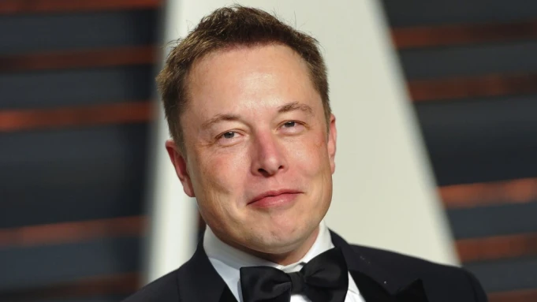

ELON REEVE MUSK
The Real Life "Ironman"

Elon Musk's Current Life Timeline
Born in Pretoria, Transvaal, South Africa.
At age of 12, sold his BASIC-based game Blastar to PC and Office Technology magazine for approximately $500.
Graduated from Pretoria Boys High School and moved to Canada in June 1989.
In 1990, he entered Queen's University in Kingston, Ontario.
After 2 years, transferred to the University of Pennsylvania, where he completed studies for a Bachelor of Arts degree in physics and a Bachelor of Science degree in economics from the Wharton School.
In 1995, he was accepted to a PhD program in materials science at Stanford University.Musk decided to join the Internet boom, instead dropping out two days after being accepted and applied for a job at Netscape.
In 1995, Musk, his brother Kimbal, and Greg Kouri founded Zip2. Errol Musk provided them with $28,000 in funding.The company developed an Internet city guide with maps, directions, and yellow pages, and marketed it to newspapers.
In February 1999, Compaq acquired Zip2 for $307 million in cash and Musk received $22 million for his 7-percent share.
In March 1999, Musk cofounded X.com; an online payment service company. A rivaling company called Confinity aimed to create a similar service. Both companies decided to merged and unite their resources and in March 2000 called the new company PayPal.
In 2000, X.com merged with online bank Confinity to avoid competition, as Confinity's money-transfer service PayPal was more popular than X.com's service.
In early 2001, Musk became involved with the nonprofit Mars Society and discussed funding plans to place a growth-chamber for plants on Mars.
In May 2002, Musk founded SpaceX with $100 million of his own money and became the company's CEO and Chief Engineer.
In October 2002, PayPal was acquired by eBay for $1.5 billion in stock, of which Musk, the largest shareholder with 11.72% of shares received $175.8 million.
In 2004, he was an early investor in the electric vehicle manufacturer Tesla Motors, Inc.
In 2006, SpaceX attempted its first launch of the Falcon 1 rocket.Though the rocket failed to reach Earth orbit, it was awarded a Commercial Orbital Transportation Services program contract.
In 2006, he helped create SolarCity, a solar energy company that was later acquired by Tesla and became Tesla Energy.
In March 2007, SpaceX launched the 2nd rockets and yet again, the launch fails.
In March 2008 the first Tesla customers got their Roadsters at a price tag of $109,000.
In September 2008, SpaceX launched for the 4th time and it was a success. Later that year, SpaceX received a $1.6 billion Commercial Resupply Services contract from NASA for 12 flights of its Falcon 9 rocket and Dragon spacecraft to the International Space Station, replacing the Space Shuttle after its 2011 retirement.
In March 2009, Musk unveiled the first Tesla Model S.
In June 2010, Tesla Motors went public at $17 per share and ended up at $24.
In October 2010, Musk bought a car factory from Toyota.
In February 2012, Musk unveiled the Model X (SUV).
In May 2012, SpaceX launched the Dragon which successfully docks with the ISS.
In June 2012, Tesla begins deliveries of the all-electric Model S.
In June 2014, Musk started building the Gigafactory in Reno, Nevada, aimed to be the largest manufacturer of lithium ion batteries in the world.
In April 2015, Musk unveiled the Powerwall; a battery power unit for homes and businesses.
In December 2015, SpaceX successfully landed the 1st reusable rocket to reach orbit.
In early 2018, SpaceXlaunched the largest rocket called the Falcon Heavy.
In 2019, first customers should get their Tesla Model 3; a $35,000 electric car.
In November 2020, Elon Musk has topped Microsoft founder Bill Gates to become the world's second richest person.
Future's Timeline
2022-2023 : Land the first Big Falcon Spaceship on Mars.
2023 : Launch the first people with BFR and send them around the moon.
2024 : Blast people on the first human voyage to Mars.
2025 : Put boots on Mars.
2028 : Finish building Mars Base Alpha.
Perhaps the 2030s : Construction of the first city on Mars.
2100s onward : Terraform Mars into an Earth-like planet.